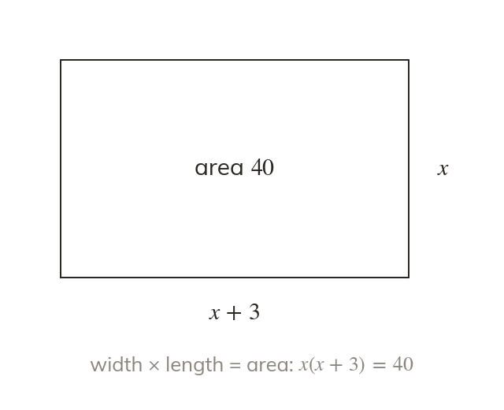

Name the unknown, equate the quantity
A letter names the unknown length. Two expressions for the same area are set equal.
A letter names the unknown length or number. Two expressions for the same quantity, such as an area, are then set equal.